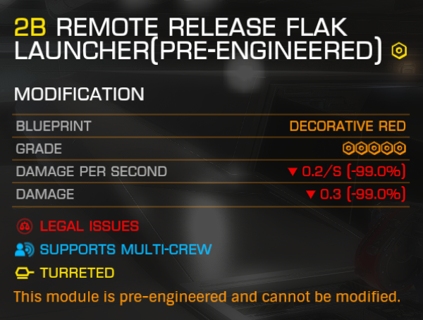

The Galnet article released on the 16th of December 3307 contained a message from the Winking Cat, stamped upon the back of the playing card stolen from Joker’s Deck:
The hunt is on!
‘1, 2, 3: 16th to 30th’
‘4, 5, 6: 23rd to 6th’. Since the Galnet also mentioned a break-in at WorldCraft, a corporation based in Epsilon Eridani, Discord member Disgo then set out to search that system and found cache #3. With a clear indication of the nature of the caches, planetary POIs, older Galnet articles about the Winking Cat’s previous heists were searched and within hours two other caches were found.
A day later, the first of three Galnets appeared, written by the Winking Cat and mocking their corresponding heist target. However, it also contained clues to the cache’s location in form of both spelling errors and a consecutive string of letters matching the system or planet name and had the planetary coordinates as a title.
All of the three caches can be found at planetary POIs named “Crashed Ship” with an Exploration activity, which differentiates them from regular Crashed Ship sites; to see those POIs, a detailed surface scan of the planet in question is required. Should they not appear immediately, dropping out of supercruise helps. They all provide a data point that, when scanned with a data link scanner, gifts the commander rewards and sends them a message about what the Winking Cat generously provided them, with the title being “Gift from ” followed by the unforunate victim of one of the Winking Cat’s heist, mocking them even further.
The dates mentioned in the aforementioned Galnet article indicate that the caches will only be available from the 16th of December to the 30th of December 3307.
Commanders playing on Odyssey should note that the gifts are available for both Beyond and Odyssey, therefore the coordinates in the Galnet articles are meant for Beyond’s planetary generation and the outfit from Cache 1 is a Beyond cosmetic.
This cache was found by searching through old Winking Cat Galnet articles. One of their notorious activities was the return of a previously stolen painting at the Alliance Festival Of Culture in 3305, which was set to conclude in the Diso system.
The POI contains a crashed SRV wreck with a log uplink underneath part of a ship wreck; due to that placement, scanning by usage of a SRV is recommended.
Scanning it reveals the following message:
Congratulations! Included in this cache is the following:
- 10.000.000 credits
- Asp Explorer Festive paintjob
- Green Santa Jumper outfitThe accompanying Galnet article contains several spelling errors:
Taking the the wrong letters as a word (dios) and rearranging them results in Diso, the location of this cache. Additionally, the system name is hidden inside the fifth line from the bottom:
Each secret indeed is o-so loud
This cache was found by researching the mentions of heists in a Galnet article from November 3307, mentioning a stolen portrait of Emperor Olban Hensard Duval, the tenth ruler of the Empire, whose notable political acts took place in, amongst other systems, Zeaex.
The POI contains a Settlement Comms Log Uplink, which reveals the following message upon scanning:
Congratulations! Included in this cache is the following:
- 10.000.000 credits
- An Imperial Courier, docked at Tryggvason OrbitalNote that the provided Imperial Courier has a rebuy price of 0 Cr.
The accompanying Galnet article also contains spelling errors:
Rearranging those letters, eaexz, yields the system name Zeaex. Alternatively, the system name is hidden in the last line:
To ride on the zea, exploring the path
The cache was the first cache to be found by the mention of a heist in WorldCraft vaults in the Galnet article mentioned at the start of this article.
It contains a Settlement Comms Log Uplink hidden between cargo racks, which are non-interactable in Odyssey, as they’re Beyond assets. Scanning it reveals the following message:
Congratulations! Included in this cache is the following:
- 10.000.000 credits
- Red Festive Flak Launcher module, stored at Darkes High
- A 5B Luxury Passenger Cabin module, stored at Darkes HIghThe Flak Launcher in question is engineered with a unique Red Festive blueprint, giving it firework-like shots at the cost of -99% damage, allowing the independent commander to finally celebrate New Year’s Eve in space.

The accompanying Galnet article also contains spelling errors:
However, the wrong letters, memsajonr, don’t result in a system name, but in parts of the planet the cache is on, Major’s. (This could also apply to Major’s Wreck in Pi-Fang, however, WorldCraft has a clear relationship to Epsilon Eridani.) Alternatively, the planet’s name is hidden in the sixth last line:
A dancer, a film star, a major claims mine